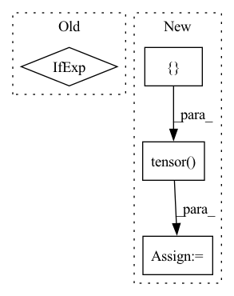

Pattern ID :21272

Before Change
feature_dict = self.tokenizer([[self.input_text, p_text]], return_tensors="pt", add_special_tokens=False).to(
self.model.device)
prediction = self.model(**feature_dict, output_hidden_states=True)
outputs = prediction.decoder_hidden_states[-1].squeeze(0) if "decoder_hidden_states" in prediction else prediction.hidden_states[-1].squeeze(0)
return outputs.data[-1]
def _predict(self, vocab_id):
After Change
feature_dict = self.tokenizer([self.input_text], return_tensors="pt", add_special_tokens=False).to(
self.model.device)
predicted = [self.tokenizer.eos_token] + predicted
dec_input = torch.tensor([self.tokenizer.convert_tokens_to_ids(predicted)]).to(self.model.device)
feature_dict["decoder_input_ids"] = dec_input
prediction = self.model(**feature_dict, output_hidden_states=True)
outputs = prediction.decoder_hidden_states[-1].squeeze(0)
else:
In pattern: SUPERPATTERN
Frequency: 3
Non-data size: 4
Instances
Fragment ID: 68084534
Project Name: voidful/textrl
Commit Name: 77ddb40d1a9414459328b355c285deaa4856ad8b
Time: 2021-06-13
Author: voidful.stack@gmail.com
File Name: textrl/environment.py
M Class Name: TextRLEnv
N Class Name: TextRLEnv
M Method Name: _get_obs(2)
N Method Name: _get_obs(2)
M Parent Class: gym.Env
N Parent Class: gym.Env
M File Name: textrl/environment.py
N File Name: textrl/environment.py
M Start Line: 44
M End Line: 47
N Start Line: 43
N End Line: 56
'>
Before Change
dim_context = default(dim_context, dim)
self.norm = LayerNorm(dim)
self.context_norm = LayerNorm(dim_context) if norm_context else nn.Identity()
self.attn_dropout = nn.Dropout(dropout)
After Change
grid = rearrange(grid, "c i j -> (i j) c")
rel_pos = rearrange(grid, "i ... -> i 1 ...") - rearrange(grid, "j ... -> 1 j ...")
rel_pos += window_size - 1
rel_pos_indices = (rel_pos * torch.tensor([2 * window_size - 1, 1])).sum(dim = -1)
self.register_buffer("rel_pos_indices", rel_pos_indices, persistent = False)
'>
Fragment ID: 68084532
Project Name: lucidrains/robotic-transformer-pytorch
Commit Name: 1455daa18da596213bc36adc8c96dc1842624e46
Time: 2022-12-14
Author: lucidrains@gmail.com
File Name: robotic_transformer_pytorch/robotic_transformer_pytorch.py
M Class Name: Attention
N Class Name: Attention
M Method Name: __init__(5)
N Method Name: __init__(8)
M Parent Class: nn.Module
N Parent Class: nn.Module
M File Name: robotic_transformer_pytorch/robotic_transformer_pytorch.py
N File Name: robotic_transformer_pytorch/robotic_transformer_pytorch.py
M Start Line: 13
M End Line: 38
N Start Line: 134
N End Line: 167
'>
Before Change
super().__init__(dist_sync_on_step=dist_sync_on_step)
self.num_cls = num_cls
self.iou_thres = iou_thres
self.map_str = "mAP@%.1f" % iou_thres[0] if not iou_thres.is_range() else "mAP@%.2f:%.2f" % iou_thres
self.component_names = ["Precision", "Recall", self.map_str, "F1"]
self.components = len(self.component_names)
self.post_prediction_callback = post_prediction_callback
After Change
if isinstance(iou_thres, IouThreshold):
self.iou_thresholds = iou_thres.to_tensor()
else:
self.iou_thresholds = torch.tensor([iou_thres])
self.map_str = "mAP" + self._get_range_str()
self.component_names = [f"Precision{self._get_range_str()}",
f"Recall{self._get_range_str()}",
'>
Fragment ID: 68084531
Project Name: deci-ai/super-gradients
Commit Name: aa31fc142fb38da18a4e86cd5c0917cf313ebde3
Time: 2022-10-13
Author: ofrimasad@users.noreply.github.com
File Name: src/super_gradients/training/metrics/detection_metrics.py
M Class Name: DetectionMetrics
N Class Name: DetectionMetrics
M Method Name: __init__(10)
N Method Name: __init__(10)
M Parent Class: Metric
N Parent Class: Metric
M File Name: src/super_gradients/training/metrics/detection_metrics.py
N File Name: src/super_gradients/training/metrics/detection_metrics.py
M Start Line: 39
M End Line: 58
N Start Line: 39
N End Line: 58